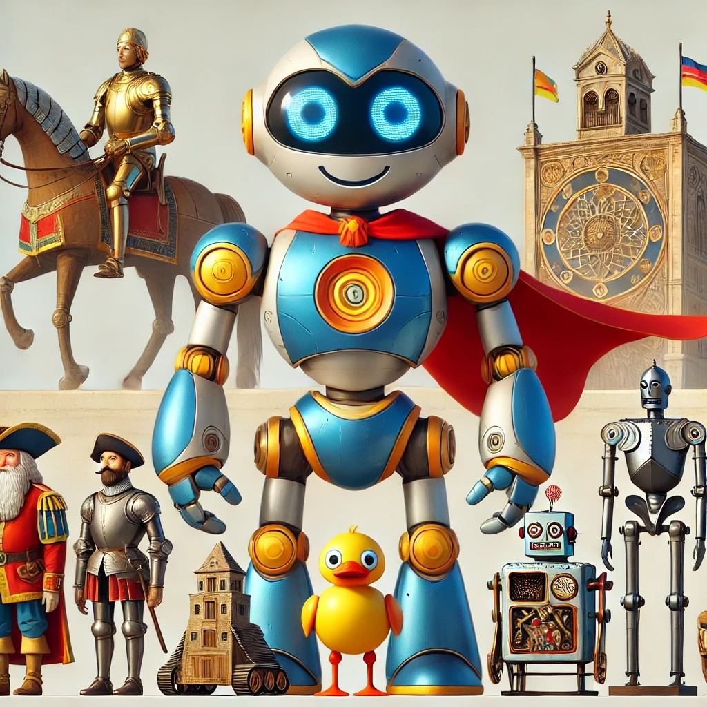
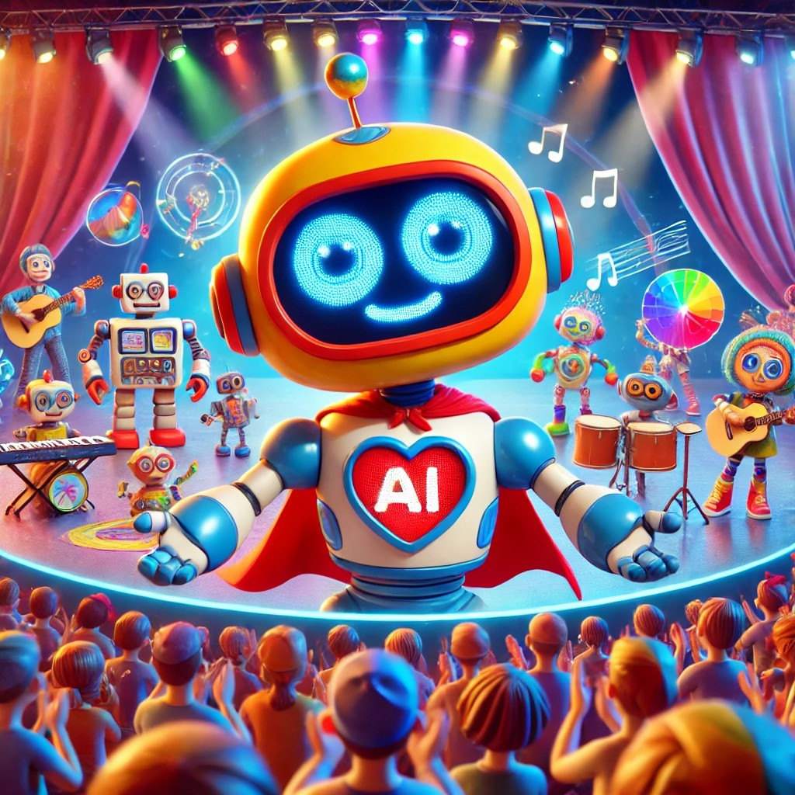
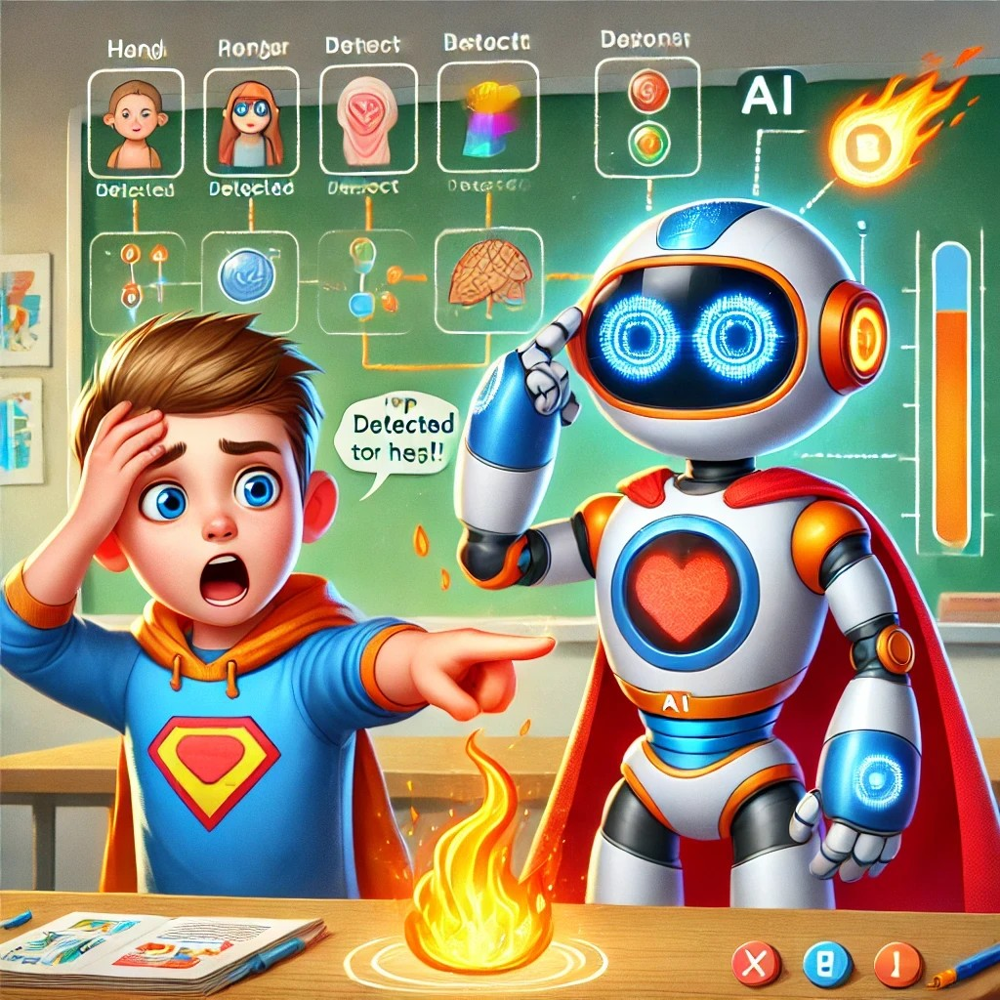
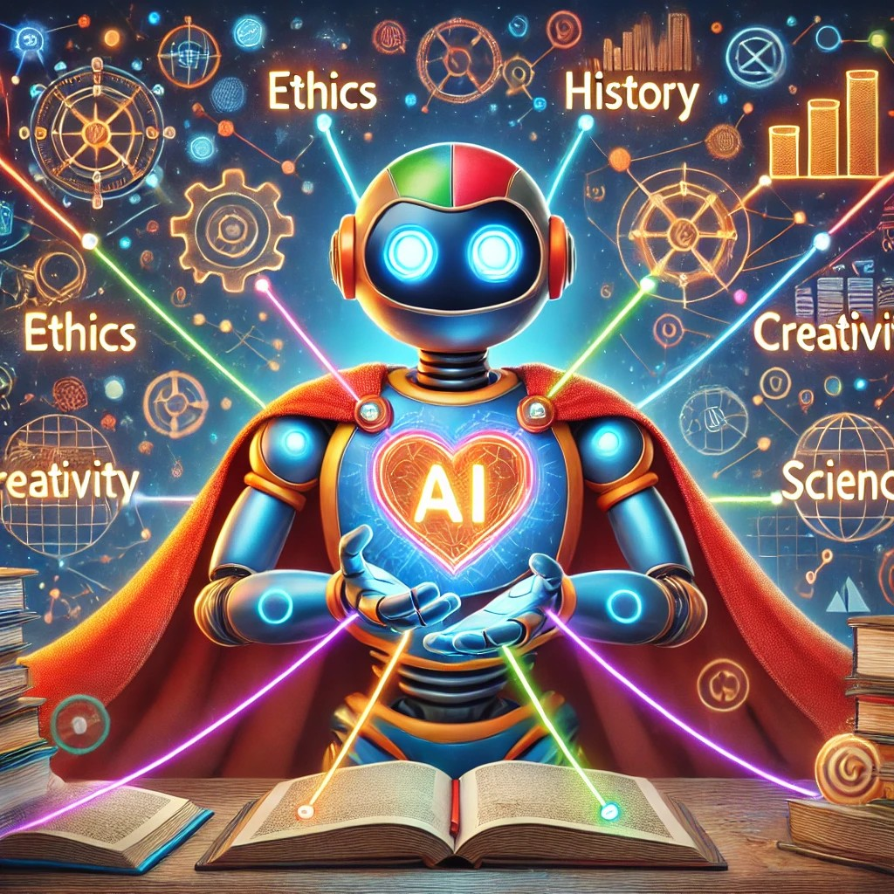

CONCEPTOS TEÓRICOS
1.1. Diario de un Robot Roto
¡Hola, humano!
Imagina que eres un robot, pero no cualquier robot. Eres un robot que ha sufrido un fallo, y te encuentras averiado. En tu mente, surge una avalancha de pensamientos y sentimientos.
- ¿Cómo ves el mundo en este estado?
- ¿Cómo era tu vida antes de que algo saliera mal?
- ¿Qué desafíos enfrentas ahora, y qué te gustaría que los humanos entendieran sobre tu existencia?

Tu tarea es escribir, en tu cuaderno, una entrada de diario desde la perspectiva de este robot.
¿Serías capaz de pedir derechos si fueras un robot? ¿Cómo crees que debería tratarse a una máquina que comienza a mostrar signos de "vida"?
Este es tu momento para ser creativo, para pensar de manera crítica sobre las implicaciones éticas de la robótica y para desafiar tus propias ideas sobre lo que significa estar "vivo". Después, tendrás la oportunidad de compartir tu perspectiva con la clase. ¿Cómo perciben tus compañeros la misma situación?
1.2. Un viaje en el tiempo con los Robots
¡Hola, exploradores del futuro! 🌟
Hoy vamos a hacer algo realmente increíble: ¡vamos a viajar en el tiempo y descubrir cómo nacieron y crecieron los robots que conocemos hoy! 🕰️🤖
¿Sabías que hace muchos, muchos años, la gente ya soñaba con máquinas que pudieran hacer cosas por sí mismas? Desde pájaros mecánicos que volaban hasta robots que trabajan en fábricas, la historia de la robótica está llena de ideas asombrosas y personas brillantes que cambiaron el mundo.

Tu misión es crear una línea de tiempo super creativa.
- Piensa en ella como un mapa del tesoro, donde cada evento es una pista que nos lleva a descubrir cómo hemos llegado hasta aquí.
- Puedes usar cualquier cosa que haga que tu línea de tiempo sea única y espectacular.
¡Diviértete y deja volar tu imaginación! Recuerda, cada robot que ves hoy tiene una historia fascinante detrás, y tú estás a punto de descubrirla. ¡Vamos a hacer que esta línea de tiempo sea tan genial que todos quieran ver cómo los robots han evolucionado con el tiempo! 🚀💡
1.3. Robot Talent Show
¡Hola, futuros inventores y genios de la robótica!
¿Alguna vez han imaginado crear un robot que pueda bailar como una estrella, pintar cuadros increíbles o resolver un cubo de Rubik en segundos? ¡Pues prepárense, porque ahora es su momento de brillar! En el Robot Talent Show, ustedes no solo serán espectadores, ¡serán los creadores de talentos robóticos únicos!
Este es su momento de dejar volar la imaginación. Piensen en lo que haría su robot si pudiera hacer cualquier cosa. ¿Quizás una coreografía épica? ¿O tal vez crear una obra de arte que deje a todos con la boca abierta? ¡Las posibilidades son infinitas!

Lo mejor de todo es que no tienen que hacerlo solos. Pueden trabajar en equipo, compartir ideas, y ayudarse unos a otros para crear el robot más genial que el mundo haya visto. ¿Quién sabe? ¡Tal vez inventen algo tan increíble que sea recordado por siempre!
Así que adelante, chicos y chicas, ¡demuestren de qué están hechos! Este es su show, su momento para mostrarle al mundo lo que pueden lograr con su creatividad y un poco de tecnología. ¡No hay límites para lo que pueden hacer!
¡Vamos a divertirnos, aprender mucho, y crear algo realmente espectacular!
¡Adelante, inventores! ¡El escenario es todo suyo! 🌟🤖
| ¡Humano, si quieres verme en acción, haz clic en le icono! |
1.4 Del Toque a la Acción: Explorando el Procesamiento de Estímulos en Humanos y Robots
¡Prepárense para una aventura increíble! Hoy, nos vamos a convertir en científicos y robots al mismo tiempo. Vamos a descubrir juntos cómo funcionan nuestros cuerpos y cómo los robots, esos amigos electrónicos, hacen cosas asombrosas.
¿Sabían que sus cuerpos son como máquinas super inteligentes? Cada vez que sienten algo, como cuando tocan algo caliente o escuchan un sonido, su cerebro recibe esa información y les dice qué hacer. ¡Es como magia!
Pero no solo los humanos tienen estos súper poderes. Los robots también pueden sentir, pensar y actuar, aunque lo hacen de una manera un poco diferente. Y hoy, vamos a descubrir cómo funcionan estos dos mundos.
Vamos a imaginar que somos los creadores de un nuevo robot o un nuevo superhéroe. ¿Qué les gustaría que pudiera hacer? ¿Cómo le enseñarían a sentir, pensar y actuar? ¡Este es su momento para crear, explorar y divertirse!

- Primero, vamos a explorar cómo nuestros cuerpos sienten y reaccionan. Imaginemos que tocamos una llama caliente. ¿Qué hace nuestro cuerpo? ¡Vamos a simular todo el recorrido, desde que nuestros dedos sienten el calor hasta que nuestro cerebro decide mover la mano rápidamente! Crearemos un diagrama para ver cómo funciona todo.
- Luego, veremos cómo un robot siente y reacciona ante algo parecido. Imaginemos que un robot detecta un objeto frente a él. ¿Qué hace para no chocar? Usaremos programas sencillos para ver cómo un robot puede detenerse justo a tiempo, ¡igual que nosotros! También compararemos cómo lo hacen los robots con lo que hacen nuestros cuerpos.
- Finalmente, nos convertiremos en inventores y crearemos nuestras propias simulaciones. Dibujaremos y presentaremos cómo un robot o nuestro cuerpo podría reaccionar en diferentes situaciones. ¡Podremos ver quién tiene las ideas más creativas!
No hay respuestas incorrectas, solo nuevas ideas que están esperando ser descubiertas por ustedes. Este es su momento para crear, explorar y divertirse. ¡Así que prepárense, porque juntos vamos a aprender cosas increíbles y a diseñar el futuro!
¡Vamos a divertirnos y a ser creativos!
1.5 Tejiendo la Red de la Robótica
¡Felicidades, exploradores de la robótica! 🌟
Han recorrido un camino fascinante, desde empatizar con un robot roto hasta diseñar talentos únicos y entender cómo los robots procesan el mundo a su alrededor. Han viajado en el tiempo, descubierto la historia de la robótica, y reflexionado sobre el futuro que podemos construir con esta increíble tecnología.

En esta actividad final, van a crear una red (mapa conceptual) que conecta la ética, la historia, la creatividad, y la ciencia, y que nos muestra cómo todo en la robótica está interconectado.
Es su momento de brillar, de demostrar cómo cada pieza del rompecabezas encaja para formar una visión completa de lo que es y lo que puede ser la robótica.
Así que, ¡manos a la obra! Conecten las ideas, dejen volar su creatividad, y construyan ese mapa que unirá todo lo que han descubierto. Porque al final de este viaje, no solo serán conocedores de la robótica, sino también los arquitectos del futuro que pueden imaginar y construir. ¡Vamos a crear algo increíble juntos! 🚀